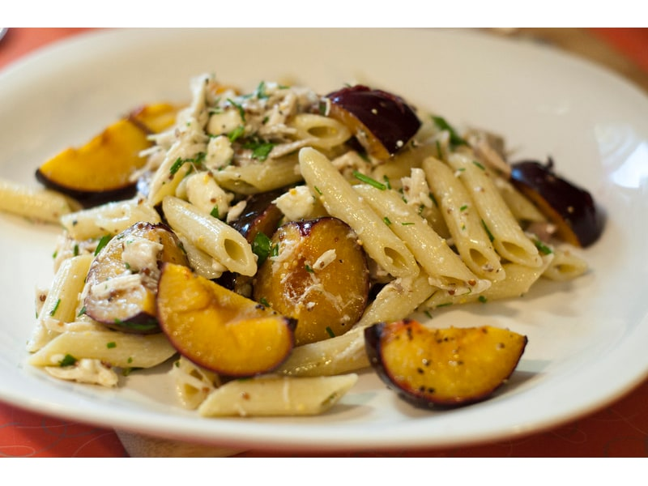

Polskie obiadki
Sałatka z makaronem
Sałatka z makaronem: 4 g białka, 135 kcal, 18 g węglowodanów i 5 g tłuszczu na 100 g. Kategoria: Polskie obiadki.
Kalorie135 kcalna 100 g
Białko / proteiny4 g
Węglowodany18 g
Tłuszcz5 g
Cena (szac.)~0,84 złza 100 g
Ceny zaktualizowano: maj 2026 (szacunek — ceny w popularnych supermarketach)
Porcja: miska (250g)
| Kalorie | 338 kcal |
|---|---|
| Białko | 10 g |
| Węglowodany | 45 g |
| Tłuszcz | 12.5 g |
| Cena (szac.) | ~2,09 zł |
Szczegółowe składniki odżywcze na 100 g
| Wartość energetyczna (kalorie) | 135 kcal |
|---|---|
| Białko (proteiny) | 4 g |
| Węglowodany | 18 g |
| Tłuszcz | 5 g |
| Tłuszcze nasycone | 1 g |
| Tłuszcze nienasycone | 4 g |
| Witaminy i minerały | Żelazo, Tiamina (B1), Potas |
| Współczynnik kcal / 1 g białka | 33.8 |
| Cena produktu (szac. za 100 g) | ~0,84 zł |
| Cena za 100 g białka (szac.) | ~20,90 zł |